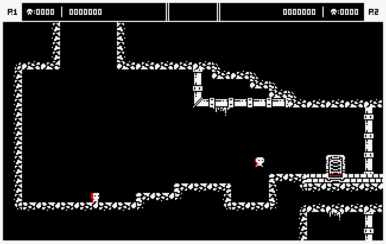

Miss Input 2

Presentado en
Miss Input 2 es un videojuego retro de plataformas en 2D con multijugador local desarrollado para la consola Amstrad CPC 464 por el equipo Chupigames y presentado al concurso CPCRetroDev 2020. Además, es la secuela de Miss Input, a partir del que se basan la temática del juego y gran parte de los conceptos de su diseño.
Adicionalmente al juego anterior, se añaden nuevas mejoras en jugabilidad, contenido y varios aspectos técnicos. De esta forma, Miss Input 2; a diferencia de su precuela, incluye principalmente: un modo multijugador local para 2 jugadores, un control de personaje más preciso, niveles más elaborados, y mejoras en el feedback visual y el audio.
Desarrollo de Miss Input 2

El objetivo principal que nos llevó a crear esta secuela, consistió en desarrollar un juego en el que se corrigiesen y perfeccionasen todos los aspectos que se hubieran podido mejorar en la precuela con una mejor gestión del tiempo.
El proyecto comenzó con 3 meses antes de su presentación dentro del concurso CPCRetroDev 2020. Empezando por la fase de diseño se reutilizó el GDD de Miss Input, y a partir de este documento se hicieron las nuevas modificaciones que se querían implementar dentro del juego respecto al anterior. Ahora con un mayor margen de tiempo para el desarrollo, empezamos a planificar las tareas extraídas del nuevo GDD. Cabe destacar que no se reutilizó ningún fragmento de código implementado en Miss Input, de hecho, todos los archivos del juego se volvieron a crear desde cero, incluyendo el contenido del nuevo juego y su código fuente que se volvió a programar en lenguaje ensamblador.
A partir de este punto se reutilizaron gran parte de las metodologías, técnicas y herramientas que se usaron en la precuela, es decir, se aplicó una metodología ágil con el uso de técnicas como pair programming, además, tal como se hizo en el desarrollo de Miss Input, se volvieron a usar las herramientas:
- VS Code: Un editor de código fuente que se utilizó para programar la totalidad del código del juego.
- CPCtelera: La librería fundamental que se usó dentro del proyecto, con funciones que permitían interactuar con la máquina Amstrad CPC de una forma más usable.
- Tiled: Un flexible editor de niveles en 2D con el que elaborar mapas simples y fáciles de crear y procesar.
- Arkos Tracker: Un programa musical usado para componer música especialmente para máquinas como Amstrad, Spectrum y otros.
- Gimp: Se trata del programa de manipulación de imágenes que se utilizó para crear los gráficos del juego.
También se conservaron los roles de cada miembro del grupo, por lo que yo volví a asumr los roles de programador de mecánicas e IA, y diseñador de sonido, mientras que Enrique Vidal Cayuela se encargó de nuevo de programar las físicas, diseñar los gráficos y crear los niveles. El último sprint se realizó una semana antes de la fecha límite y consistió en crear contenido, pulir el juego, y preparar todos los materiales para la entrega y participación de Miss Input 2 en el concurso de la CPCRetroDev 2020.
Finalmente, Miss Input 2 se presentó a la CPCRetroDev 2020, y aunque el resultado no fue sobresaliente como el de Miss Input, fue valorado muy positivamente por los jueces del concurso y al menos nosostros nos sentimos satisfechos con el juego desarrollado.